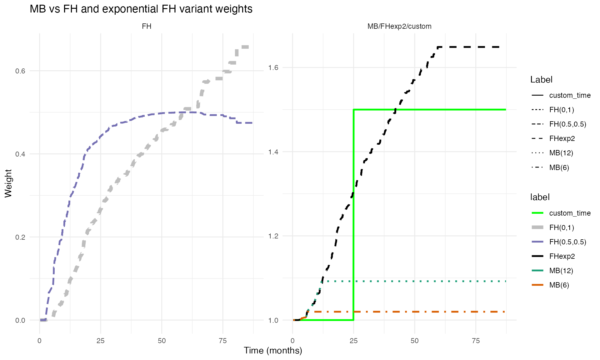

Weighted Cox Model Estimation Methodology
Source:vignettes/articles/weightedcox_methodology.Rmd
weightedcox_methodology.RmdOverview
This article describes the weighted Cox model estimation methodology
implemented in the weightedsurv package. Weighted Cox
models extend the standard Cox proportional hazards framework by
incorporating time-dependent weight functions into the partial
likelihood. These weights allow the analyst to emphasize treatment
effects at different points on the survival distribution — for example,
weighting later time-points more heavily in late-separation scenarios
common in immunotherapy trials.
The methodological foundations draw on the work of Lin (1991) and Sasieni (1993) who developed the theory for weighted partial-likelihood estimation, and León, Lin, and Anderson (2020) who proposed companion weighted Cox estimators linked to weighted log-rank combination tests.
The weightedsurv package provides a unified interface
for computing weighted Cox model estimates across multiple weighting
schemes, with variance estimation based on both asymptotic and
synthetic-martingale resampling approaches.
Background: Non-Proportional Hazards and the Standard Cox Model
The Two-Sample Setting
Consider the standard two-sample random censorship model used in clinical trials. For let if observation is from group with . Let denote the survival time and the censoring time. We observe and . Survival times are assumed independent of censoring conditional on treatment.
The at-risk and counting processes are
The standard Cox model assumes , yielding a constant hazard ratio . The maximum partial-likelihood estimator solves the score equation
where for .
Why Weighted Cox Models?
Under non-proportional hazards the true model is with a time-varying coefficient . In this case the standard Cox estimator converges to a weighted average of that depends on the censoring distribution, risk-set composition, and the pattern of non-proportional hazards. The resulting “average hazard ratio” may not accurately reflect the treatment effect at clinically relevant time periods.
For example, in a late-separation scenario where for and for , the standard Cox estimator attenuates the true later-term effect toward the null because it gives substantial weight to the early period where there is no treatment difference.
Weighted Cox models address this by introducing a time-dependent weight function into the partial likelihood, allowing the analyst to emphasize contributions from specific time regions.
Weighted Partial Likelihood
Definition
The -weighted partial likelihood is
where is a predictable weight function. The weighted Cox estimator maximizes and solves
Note that for this reduces to the standard Cox score equation, and in the two-sample setting evaluated at is the weighted log-rank statistic.
Weighting Schemes and Their Rationale
The weightedsurv package implements several weighting
schemes through the wt.rg.S() function and the
cox_rhogamma() interface. Each scheme corresponds to a
different emphasis on the survival time scale:
Fleming-Harrington FH(, ): The weight function is where is the left-continuous pooled Kaplan-Meier estimator and , . The standard log-rank / Cox model corresponds to FH(0, 0). Increasing (with ) emphasizes late differences; increasing (with ) emphasizes early differences.
Magirr-Burman (MB): which provides modest downweighting of early time-points relative to the user-specified cutoff .
Schemper: where is the pooled Kaplan-Meier censoring survivor function. This scheme produces an “average hazard ratio” estimator that is approximately free of the censoring distribution.
Xu-O’Quigley (XO): which also yields a censoring-independent average hazard ratio estimator.
Custom time-based: Step-function weights of the form , which allow the analyst to zero-out contributions before or after a pre-specified time-point.
Variance Estimation
The variance of is estimated through the weighted observed information and weighted score variance. The weighted information is
and the score variance is estimated (evaluated at ) following the martingale-based approach of Fleming and Harrington (1991):
where is the FH weight kernel evaluated at . Note that at the score statistic and its variance reduce to the weighted log-rank statistic and its standard variance estimator.
The standard error of is then .
Synthetic-Martingale Resampling
In addition to asymptotic standard errors, weightedsurv
implements synthetic-martingale resampling for variance estimation,
which can have improved small-sample properties. The idea (Dobler, Beyersmann, and Pauly (2017)) is to
replace the unobservable martingale increments
with independent standard normal realizations multiplied by observable
counting-process increments:
where
are independent of the data. The resampled distribution of
approximates the sampling distribution of
.
Repeating this process a large number of times (draws in
cox_rhogamma()) yields resampling-based confidence
intervals.
This approach extends naturally to constructing simultaneous confidence intervals across multiple weighting schemes, which is critical when the weighting scheme is selected via a combination test (see León, Lin, and Anderson (2020)).
Asymptotic Properties Under Misspecification
The Estimand: What Does Estimate?
Under regularity conditions (Lin (1991)), converges in probability to , the solution to where
with the probability limit of , and , .
This shows that is a weighted average (on the log-hazard scale) of the time-varying , with weights determined jointly by , the censoring distribution, and the risk-set dynamics.
Late-Separation Scenario
To build intuition, consider the change-point model with equal randomization () and censoring independent of treatment. Then satisfies
where .
The first integral covers the null period () where the contribution pushes toward zero; the second integral covers the treatment-effect period () and pushes toward . Weighting schemes that downweight the first integral (e.g., FH(0,1)) therefore produce estimands closer to the true treatment effect .
Using weightedsurv for Weighted Cox Estimation
Workflow
The typical workflow for weighted Cox estimation in
weightedsurv involves:
- Prepare a counting-process dataset via
df_counting()orget_dfcounting() - Fit weighted Cox models via
cox_rhogamma()with the desired weighting scheme - Optionally, use resampling (the
drawsargument) for improved inference
The df_counting() function computes risk sets, event
counts, Kaplan-Meier estimates, and the specified weighting scheme. The
cox_rhogamma() function then uses this counting-process
representation to solve the weighted score equation.
Example: GBSG Trial Data
We illustrate using the GBSG randomized trial data available in the
survival package.
library(survival)
library(weightedsurv)
library(data.table)
# Prepare GBSG data
df_gbsg <- gbsg
df_gbsg$tte <- df_gbsg$rfstime / 30.4375 # Convert days to months
df_gbsg$event <- df_gbsg$status
df_gbsg$treat <- df_gbsg$hormon
tte.name <- "tte"
event.name <- "event"
treat.name <- "treat"
arms <- c("treat", "control")Step 1: Counting-Process Dataset
The df_counting() function computes the full
counting-process representation along with the specified weighting
scheme:
# Standard (unweighted) analysis with FH(0,0) = standard log-rank / Cox
dfcount_gbsg <- df_counting(
df = df_gbsg,
tte.name = tte.name,
event.name = event.name,
treat.name = treat.name,
arms = arms,
by.risk = 12,
scheme = "fh",
scheme_params = list(rho = 0, gamma = 0)
)Step 2: Standard Cox Model
With FH(0,0) weights the weighted Cox model reduces to the standard Cox model:
# Standard Cox via cox_rhogamma with FH(0,0)
fit_cox <- cox_rhogamma(
dfcount = dfcount_gbsg,
scheme = "fh",
scheme_params = list(rho = 0, gamma = 0),
draws = 1000,
verbose = FALSE
)
cat("Standard Cox model\n")## Standard Cox model## HR: 0.695
cat(" 95% CI (asymptotic):",
round(fit_cox$hr_ci_asy$lower, 3), "-",
round(fit_cox$hr_ci_asy$upper, 3), "\n")## 95% CI (asymptotic): 0.544 - 0.888
cat(" 95% CI (resampling):",
round(fit_cox$hr_ci_star$lower, 3), "-",
round(fit_cox$hr_ci_star$upper, 3), "\n")## 95% CI (resampling): 0.54 - 0.889## Z-score: 2.927Step 3: Weighted Cox Models with Different Schemes
Now we fit weighted Cox models with several weighting schemes to examine how emphasis on different time regions affects the hazard ratio estimate:
# FH(0,1): Late-emphasis weighting
fit_fh01 <- cox_rhogamma(
dfcount = dfcount_gbsg,
scheme = "fh",
scheme_params = list(rho = 0, gamma = 1),
draws = 1000,
verbose = FALSE
)
# FH(1,0): Early-emphasis weighting
fit_fh10 <- cox_rhogamma(
dfcount = dfcount_gbsg,
scheme = "fh",
scheme_params = list(rho = 1, gamma = 0),
draws = 1000,
verbose = FALSE
)
# Magirr-Burman with 12-month cutoff
fit_mb <- cox_rhogamma(
dfcount = dfcount_gbsg,
scheme = "MB",
scheme_params = list(mb_tstar = 12),
draws = 1000,
verbose = FALSE
)
# Custom: Zero weight before 6 months, unit weight after
fit_custom <- cox_rhogamma(
dfcount = dfcount_gbsg,
scheme = "custom_time",
scheme_params = list(t.tau = 6, w0.tau = 0, w1.tau = 1),
draws = 1000,
verbose = FALSE
)Comparison of Results
library(gt)
results <- data.table(
Scheme = c("FH(0,0) [Standard Cox]", "FH(0,1) [Late emphasis]",
"FH(1,0) [Early emphasis]", "MB(12)", "Custom 0/1 at 6 months"),
HR = c(fit_cox$hr_ci_asy$hr, fit_fh01$hr_ci_asy$hr,
fit_fh10$hr_ci_asy$hr, fit_mb$hr_ci_asy$hr, fit_custom$hr_ci_asy$hr),
Z = c(fit_cox$z.score, fit_fh01$z.score,
fit_fh10$z.score, fit_mb$z.score, fit_custom$z.score),
Lower = c(fit_cox$hr_ci_star$lower, fit_fh01$hr_ci_star$lower,
fit_fh10$hr_ci_star$lower, fit_mb$hr_ci_star$lower, fit_custom$hr_ci_star$lower),
Upper = c(fit_cox$hr_ci_star$upper, fit_fh01$hr_ci_star$upper,
fit_fh10$hr_ci_star$upper, fit_mb$hr_ci_star$upper, fit_custom$hr_ci_star$upper)
)
results %>%
gt() %>%
fmt_number(columns = c(HR, Z, Lower, Upper), decimals = 3) %>%
cols_label(
Scheme = "Weighting Scheme",
HR = "Hazard Ratio",
Z = "Z-score",
Lower = "95% CI Lower",
Upper = "95% CI Upper"
) %>%
tab_header(
title = "Weighted Cox Model Estimates: GBSG Trial",
subtitle = "Resampling-based 95% confidence intervals (1000 draws)"
) %>%
tab_footnote(
footnote = "FH(rho, gamma) = Fleming-Harrington weights; MB = Magirr-Burman.",
locations = cells_column_labels(columns = Scheme)
)| Weighted Cox Model Estimates: GBSG Trial | ||||
| Resampling-based 95% confidence intervals (1000 draws) | ||||
| Weighting Scheme1 | Hazard Ratio | Z-score | 95% CI Lower | 95% CI Upper |
|---|---|---|---|---|
| FH(0,0) [Standard Cox] | 0.695 | 2.927 | 0.540 | 0.889 |
| FH(0,1) [Late emphasis] | 0.721 | 2.261 | 0.540 | 0.952 |
| FH(1,0) [Early emphasis] | 0.687 | 2.952 | 0.530 | 0.885 |
| MB(12) | 0.696 | 2.918 | 0.541 | 0.890 |
| Custom 0/1 at 6 months | 0.691 | 2.906 | 0.532 | 0.890 |
| 1 FH(rho, gamma) = Fleming-Harrington weights; MB = Magirr-Burman. | ||||
Visualizing Weight Functions
The plot_weight_schemes() function displays the weight
profiles over the event time-scale, illustrating how different schemes
emphasize different regions:
g <- plot_weight_schemes(dfcount_gbsg)
print(g)
Weighted Cox with Propensity-Score Adjustment
The weightedsurv package supports subject-specific
(case) weights in combination with time-dependent weighting. This is
particularly useful for observational studies where propensity-score
weighting is used to adjust for confounding.
# Prepare Rotterdam data (observational study)
gbsg_validate <- within(rotterdam, {
rfstime <- ifelse(recur == 1, rtime, dtime)
time_months <- rfstime / 30.4375
status2 <- ifelse(recur == 1 | (recur == 0 & death == 1 & rtime < dtime), recur, death)
grade3 <- ifelse(grade == "3", 1, 0)
treat <- hormon
event <- status2
tte <- time_months
})
df_rotterdam <- subset(gbsg_validate, nodes > 0)
# Propensity score model
fit.ps <- glm(treat ~ age + meno + size + grade3 + nodes + pgr + chemo + er,
data = df_rotterdam, family = "binomial")
pihat <- fit.ps$fitted
pihat.null <- glm(treat ~ 1, family = "binomial", data = df_rotterdam)$fitted
wt.1 <- pihat.null / pihat
wt.0 <- (1 - pihat.null) / (1 - pihat)
df_rotterdam$sw.weights <- ifelse(df_rotterdam$treat == 1, wt.1, wt.0)
# Weighted counting-process dataset (propensity-score weighted)
dfcount_wtd <- get_dfcounting(
df = df_rotterdam,
tte.name = "tte", event.name = "event", treat.name = "treat",
arms = arms, by.risk = 24, weight.name = "sw.weights"
)
# Weighted Cox models with propensity-score adjustment
fit_ps_cox <- cox_rhogamma(dfcount = dfcount_wtd, scheme = "fh",
scheme_params = list(rho = 0, gamma = 0),
draws = 1000, verbose = FALSE)
fit_ps_fh01 <- cox_rhogamma(dfcount = dfcount_wtd, scheme = "fh",
scheme_params = list(rho = 0, gamma = 1),
draws = 1000, verbose = FALSE)
cat("Rotterdam propensity-score weighted analyses:\n")## Rotterdam propensity-score weighted analyses:
cat(" Standard Cox HR:", round(fit_ps_cox$hr_ci_asy$hr, 3),
" 95% CI:", round(fit_ps_cox$hr_ci_star$lower, 3), "-",
round(fit_ps_cox$hr_ci_star$upper, 3), "\n")## Standard Cox HR: 0.632 95% CI: 0.494 - 0.824
cat(" FH(0,1) Cox HR:", round(fit_ps_fh01$hr_ci_asy$hr, 3),
" 95% CI:", round(fit_ps_fh01$hr_ci_star$lower, 3), "-",
round(fit_ps_fh01$hr_ci_star$upper, 3), "\n")## FH(0,1) Cox HR: 0.693 95% CI: 0.513 - 0.954Connection to Weighted Log-Rank Tests
Score-Test Equivalence
The weighted Cox score statistic evaluated at is algebraically equivalent to the weighted log-rank statistic. That is, where
with .
This duality connects hypothesis testing (via the weighted log-rank
test) and estimation (via the weighted Cox model) under the same
weighting scheme, and justifies referring to the weighted Cox estimator
as the “companion” to the weighted log-rank test. In
weightedsurv, the check_results() function
verifies this equivalence numerically.
Companion Estimators and Combination Tests
When multiple weighted log-rank tests are combined in a max-combo test (León, Lin, and Anderson (2020)), the “companion” Cox estimator is the weighted Cox estimate corresponding to the weighting scheme that yielded the largest test statistic. Since is selected via a data-dependent process, valid inference requires simultaneous confidence intervals that hold across all weighting schemes.
The critical value is determined such that
which is computed via the same synthetic-martingale resampling using common draws across all weighting schemes, thereby preserving the correlation structure.
Interpretation and Estimands
What Does the Weighted Hazard Ratio Mean?
Under non-proportional hazards each weighted Cox estimator converges to a different estimand that reflects the weighting-specific average of the time-varying hazard ratio. The following interpretive principles apply:
- FH(0,0) (standard Cox): Estimates an overall average hazard ratio. Under proportional hazards it estimates the true constant HR.
- FH(0, ) with (late emphasis): Estimates a hazard ratio that more heavily reflects later-term treatment effects. Under late-separation, this is closer to the true treatment benefit after the change-point.
- FH(, 0) with (early emphasis): Estimates a hazard ratio reflecting early treatment effects. Under early-separation, this captures the initial treatment benefit.
- Schemper / XO: Estimate “average hazard ratios” that are approximately independent of the censoring distribution.
Censoring Dependence
In general, the estimand depends on the censoring distribution through its influence on the risk-set dynamics and the probability limit of the weights. The Schemper and XO weighting schemes were specifically designed to yield estimands that are (asymptotically) free of the censoring distribution . For FH weights, the degree of censoring dependence can be evaluated numerically using the limiting equation described above.
Cautions
As discussed by Hernán (2010), Aalen, Cook, and Røysland (2015), and Stensrud, Røysland, and Ryalen (2019), hazard ratios — even under randomization and ideal proportional hazards conditions — are subject to potential selection bias through temporal conditioning on risk sets. Weighted Cox estimators may further complicate these dynamics through the additional time-dependent weighting. The weighted hazard ratio should therefore be interpreted as a complementary summary of treatment effect with careful attention to what the specific weighting pattern emphasizes.
Summary
The weighted Cox model estimation framework in
weightedsurv provides:
-
Flexible weighting via multiple schemes (FH, MB,
Schemper, XO, custom) through a unified
cox_rhogamma()interface - Dual inference: Both asymptotic and resampling-based standard errors and confidence intervals
- Score-test duality: Direct connection between weighted Cox estimation and weighted log-rank testing
- Propensity-score compatibility: Subject-specific case weights can be combined with time-dependent weighting
- Simultaneous inference: Support for simultaneous confidence intervals needed when the weighting scheme is selected via a combination test
The key functions are:
| Function | Role |
|---|---|
df_counting() / get_dfcounting()
|
Prepare counting-process data with weights |
cox_rhogamma() |
Fit weighted Cox models with asymptotic and resampling inference |
wt.rg.S() |
Compute time-dependent weight functions |
plot_weight_schemes() |
Visualize weight profiles |
check_results() |
Verify score-test equivalence |
wlr_dhat_estimates() |
Weighted log-rank with survival-difference estimates |